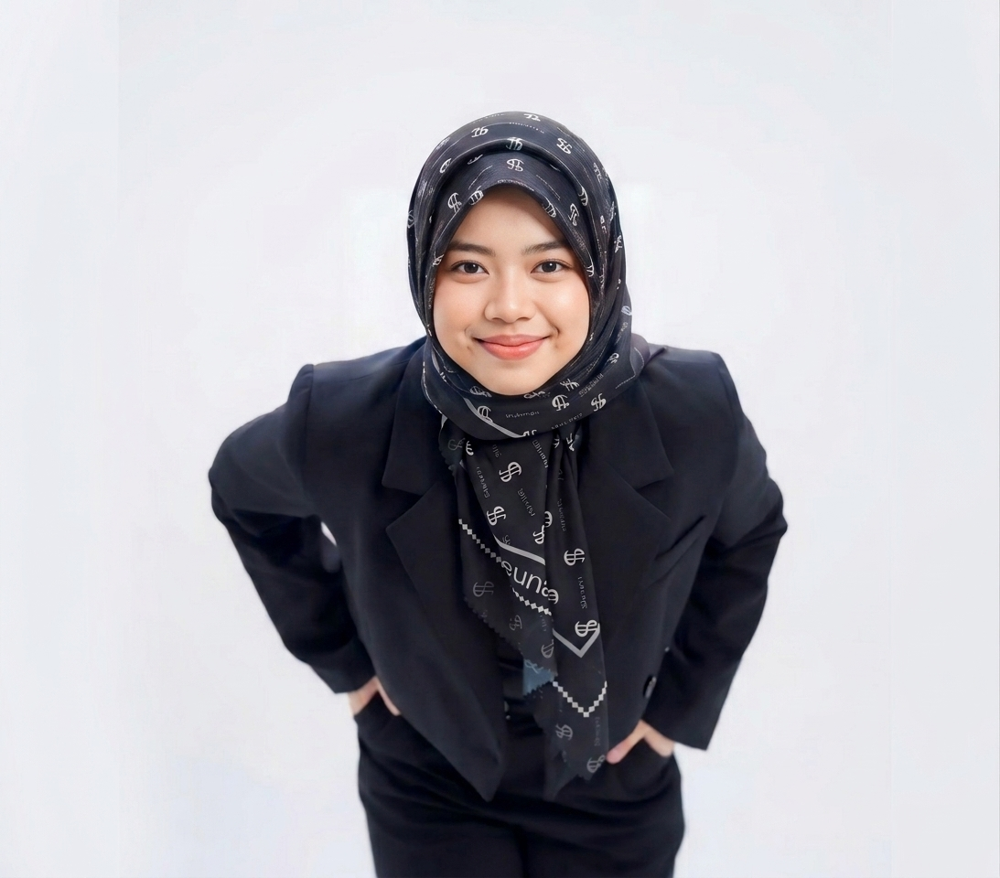

Halo, selamat datang! 👋
Lulusan Terbaik Ekonomi Islam UII (Magna Cum Laude) & Penggerak ekosistem ekonomi & keuangan syariah nasional.

Lulusan terbaik program Ekonomi Islam Universitas Islam Indonesia dengan predikat Magna Cum Laude (3 tahun 7 bulan, IPK 3.93/4.00, dan nilai "A" pada skripsi). Saat ini aktif mendorong ekosistem syariah nasional sebagai intern Divisi Promosi KNEKS.
Pemegang sertifikasi profesional Certified Islamic Money Manager (CIMM) dari IARFC Indonesia, dengan rekam jejak kepemimpinan sebagai Koordinator Nasional Pembinaan Kader FoSSEI yang mengelola strategi pengembangan manusia di 250 chapter universitas.
Berpengalaman sebagai Duta Literasi Keuangan Syariah OJK dengan keahlian komunikasi institusional, digital storytelling, dan manajemen stakeholder di industri keuangan syariah & halal.
Mengutamakan dampak nyata bagi masyarakat & ekosistem halal.
Akuntabilitas tinggi dalam pengelolaan program & keuangan.
Membangun jejaring lintas lembaga, OJK, BI, hingga bursa.
Mendorong literasi & inklusi keuangan syariah bagi semua.
Komite Nasional Ekonomi dan Keuangan Syariah
Islamic Economic Society DIY
Industrial Internship Program
Universitas Islam Indonesia (UII)
Bidang yang dikuasai selama studi
Jan 2026 — Sekarang
Memimpin strategi human capital nasional untuk 15 wilayah & ±250 chapter universitas; merancang kurikulum kader nasional; melakukan asesmen keberlanjutan organisasi.
Jul 2024 — Des 2025
Membangun kemitraan strategis dengan OJK, BNI Sekuritas & IDX Yogyakarta; menginisiasi program Sharia Capital Market School.
Agu 2024 — Agu 2025
Mengelola siklus keuangan 50 anggota aktif, alokasi dana operasional Rp1.400.000/bulan, penyusunan RAB lintas divisi, dan audit internal periodik.
Jan 2025 — Des 2025
Melatih 40 Bendahara Regional melalui workshop modul keuangan; mengembangkan 3 unit usaha kreatif (BUMF) untuk keberlanjutan program nasional.
2023 — 2024
Menyusun LPJ berakurasi tinggi; mengelola SOP operasional harian & sistem pelaporan simulasi perbankan syariah bagi mahasiswa.
2023 — 2025
Memimpin pengelolaan media sosial resmi prodi; konten edukatif mencapai 34.700+ views; membangun komunitas 663 followers & branding prodi.
OJK & FoSSEI DIY — Penggerak kampanye #Simfoniberdaya; mendorong inklusi keuangan kepada 50 warga Gunungkidul.
OJK Jakarta Pusat — Bagian dari 2.350 ambassador nasional; memberdayakan ibu, UMKM, & tokoh agama via ToT literasi syariah.
Menjadi LO event fakultas nasional; mengoordinasikan 50 anggota panitia lintas 3 departemen.
Fakultas Ilmu Agama Islam, Universitas Islam Indonesia
2026IARFC Indonesia — sertifikasi internasional diakui 35 kantor perwakilan global.
2025 — 2027Bank BTN Syariah — atas IPK 3.93 & kontribusi aktif pada pengembangan ekonomi syariah.
2025Event fakultas skala nasional yang diselenggarakan LEM FIAI UII.
2023Manajemen organisasi skala nasional, koordinasi regional, strategi human capital.
Public speaking, moderasi acara (MC), negosiasi, relasi stakeholder tingkat tinggi.
Edukasi inklusi keuangan syariah, advokasi publik, perencanaan keuangan pribadi.
Tertarik bekerja sama, berdiskusi, atau mengundang saya untuk edukasi & moderasi? Silakan hubungi.
rizka.prabu@gmail.com
0851-5992-4096
linkedin.com/in/rizkaseptiaprabu
Sleman, DI Yogyakarta